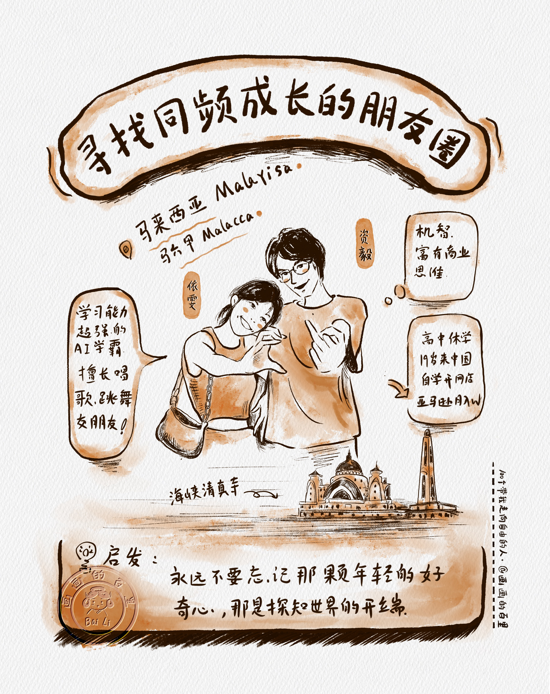
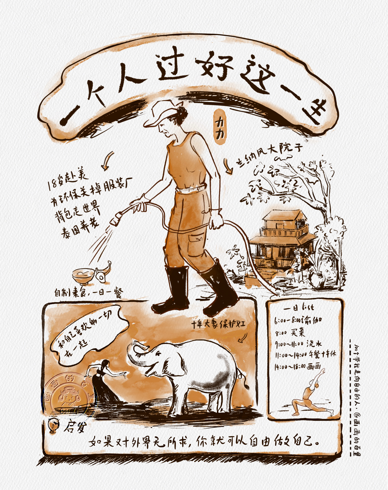
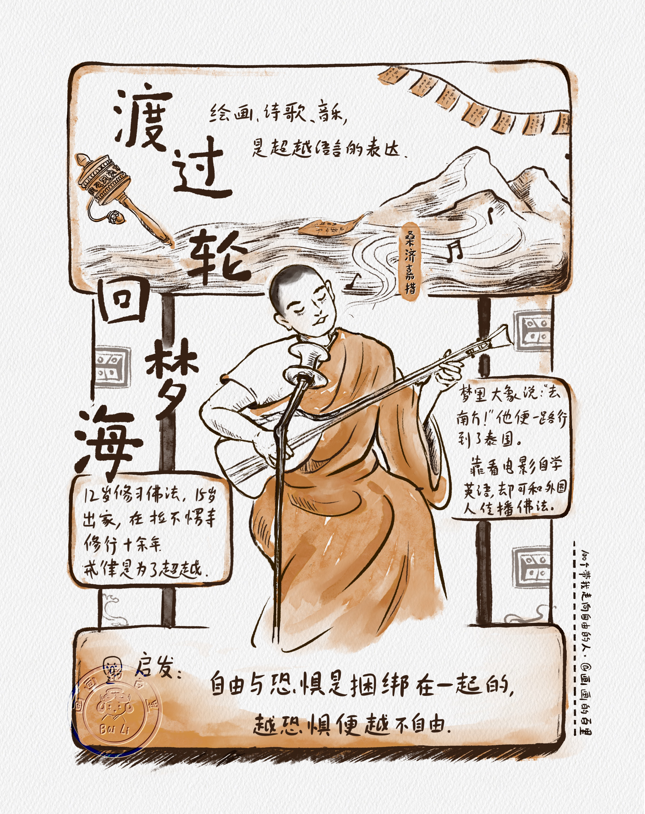
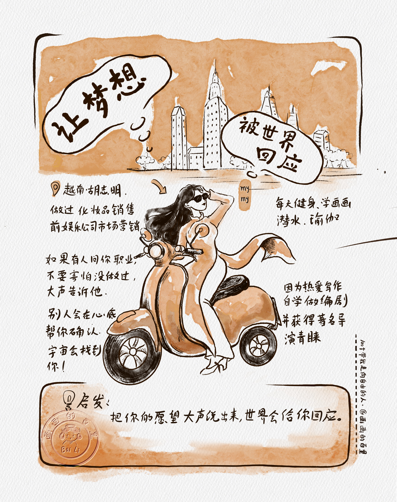
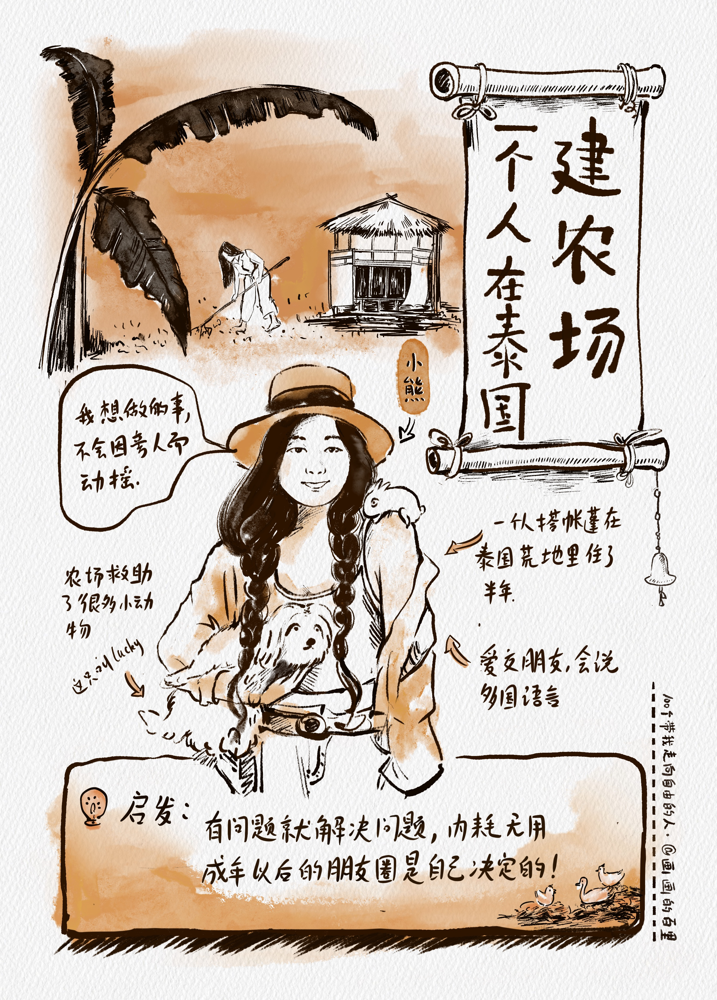

NO.01 / FAMILY JOURNEY
和女儿一起环游世界
一个关于重新出发的故事：带着孩子走向世界，也带着自己重新理解人生的可能性。
SERIES / 100 PEOPLE TO FREEDOM
2023 年，百里裸辞出发，周游世界，走过 12 个国家。路上遇见的人、听见的故事、被照亮的选择，后来都被画进了这个系列：100 个带我走向自由的人。
OPENING WORK
这不是一组旅行打卡，而是一份关于“如何生活”的人物档案。每个人都以自己的方式穿过恐惧、身份、职业、亲密关系和边界，也把自由从抽象的词，变成可以被看见、被记住的日常。
返回绘画作品
NO.01 / FAMILY JOURNEY
一个关于重新出发的故事：带着孩子走向世界，也带着自己重新理解人生的可能性。

NO.02 / MALAYSIA
年轻、好奇、向外探索。他们把对中国的想象，变成学习、旅行和未来计划的一部分。

NO.03 / SOLO LIFE
一个人生活，不等于孤单。她把独处变成秩序、选择和对自我边界的温柔确认。

NO.04 / MONK JOURNEY
修行不只在寺院，也在路上。他用语言、音乐和行走，把佛法带到更远的地方。

NO.05 / VIETNAM
把愿望说出口，是回应世界的第一步。她的故事提醒我，野心也可以明亮、坦荡。

NO.06 / THAILAND
她在异国土地上建立自己的农场。自由不是逃离现实，而是把生活一点点种出来。